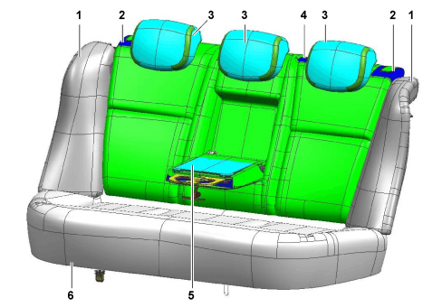
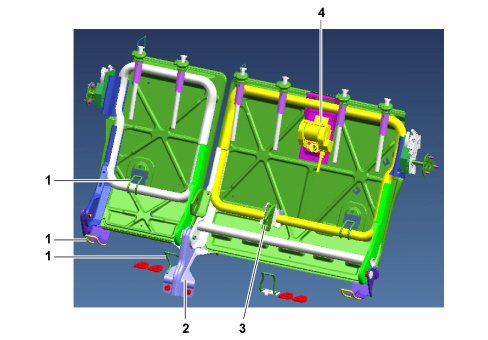
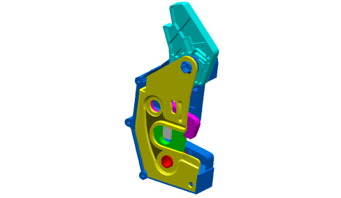

INTRODUCTION - REAR SEATS
- Path
- Descriptions > 70 FITTINGS > 7050 REAR SEATS > INTRODUCTION - REAR SEATS
- Kind
- system description
- Applies to
- all engines; all production periods
- Interactive page
- https://sloeber94.github.io/elrnDB-fCrm/en/#/194001963
Applies to: all engines; all production periods
SPECIFICATIONS
The rear seat is split (40/60) as standard and the cushion folds over.
The structure of the rear seat has been designed to assist the protection offered by the occupant protection system.
The structure of the backrests is designed to guarantee the maximum safety of the occupants in all types of impacts, including any luggage being projected forwards.
The rear cushion has an effective anti-submarinig structure. There is a PPE interface with the vehicle floor with a spacer function and anti-submaring effect.
The structure of the cushion is not moulded on the upholstery. The foam used for the rear seats is comfortable thanks to load carrying solutions (a parameter that mesures the capacity of the upholstery to yield under the weight of the body) that are differentiated depending on the area of the seat.
Head restraints are fitted as standard for the rear seat and they are height adjustable by around 80 mm with the shape of the seat allowing improved rear visibility when they are lowered and excellent comfort when they are in the usage position.
The head restraints are suitably upholstered to be soft and give pleasant support. The shape of the head restraints has also been designed in accordance with the latest ergonomic standards to protect the occupant from whiplash.
The rear head restraints are height adjustable (one position only conforming with standard ACE 17).
To ensure a high level of safety and comfort for all the occupants, there are 3 inertia reel seat belts with force limiters. The two side belts, with mountings secured to the rear crossmember, include an electronically operated pretensioner.
It is also possible to fit child seats for carrying infants in accordance with ECE regulation 14/16 with the belt conforming to the Gabarit model to ensure the perfect retention of the body.
It is also possible to fit up to two child seats using the ISOFIX three point mounting on the side rear seats; the third attachment is located on the top of the backrest.
The main features of the rear seats are listed below:
- Number of homologated places: 3
- Split backrest 40/60%
- Three height adjustable head restraints
- Upholstered centre armrest
- Centre armrest complete with oddments compartment
- Three point seat belt for middle passenger incorporated in the backrest (when folded over)
- Three point ISOFIX mountings (two on the cushion and one on the backrest)
- Lateral structures with Side Bags (OPT)
- Rear backrest folding control with release at the top of the backrest
COMPOSITION
View of rear seat

1 - Lateral structure with Side Bag (OPT)
2 - Rear backrest with folding controls
3 - Head restraint
4 - Belt reel trim (middle passenger)
5 - Centre armrest with oddments compartment
6 - Bag
STRUCTURE
View of backrest structure

1 - ISOFIX mounting
2 - Brackets for fastening to the floor
3 - Brackets for fastening armrest
4 - Middle passenger seat belt reel
The backrest is folded over onto the cushion usign the special release lever at the top of the actual backrest.
The backrest attachment device is described below.
